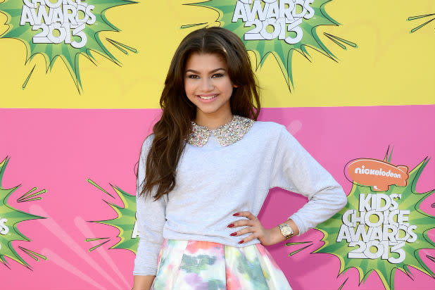
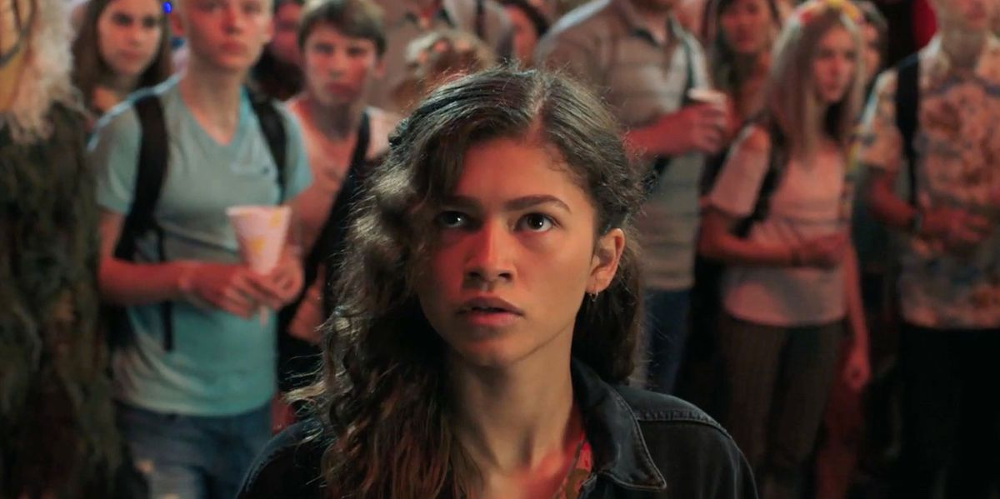
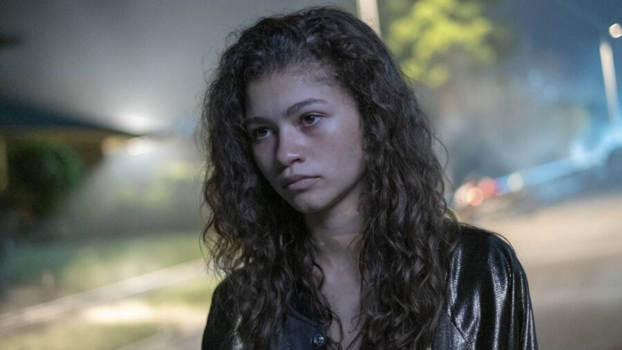
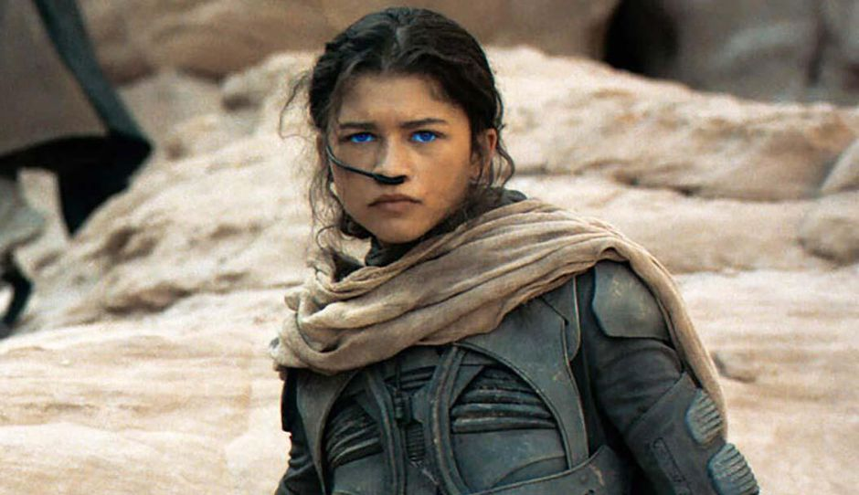

Early Life...
Born on September 1, 1996, in Oakland, California, Zendaya is an American actress and singer who began her performing career at a young age. She participated in various dance troupes, including Future Shock Oakland, and studied acting at the California Shakespeare Theater and the American Conservatory Theater. She also acted in several plays, including productions of "Once on This Island," "Caroline, or Change," and William Shakespeare's works.
Career...
She began her career as a child model and backup dancer, and made her television debut as Rocky Blue on the Disney Channel sitcom "Shake It Up". During her time on the show, she also released her single "Swag It Out", starred in the Disney Channel Original Movie called "Frenemies", and released her self-titled debut album in 2013.In 2017, Zendaya transitioned to feature films, making her debut as Michelle in "Spider-Man: Homecoming". She also co-starred in "The Greatest Showman" that same year. In 2019, she began starring in the HBO drama series "Euphoria", which earned her critical acclaim and a Primetime Emmy Award for Outstanding Lead Actress in a Drama Series. Zendaya's career continues to flourish in 2023. She also appeared in the documentary film "Invisible Beauty" and is set to star in and produce a sports drama titled "Challengers". She will also reprise her role as Chani in the sequel to "Dune".
  